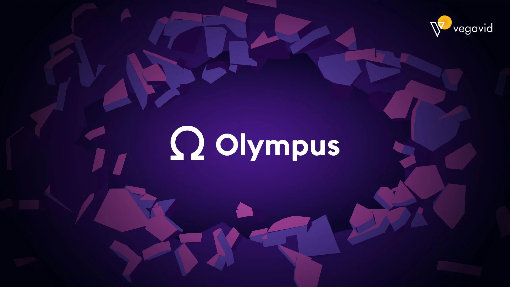

HTML Creator
Olympus DAO operates as a decentralized reserve currency protocol designed to create a stable, crypto-native financial system that does not rely on traditional fiat currencies like the US Dollar. To achieve this, it utilizes a complex ecosystem of game theory, economic incentives, and protocol-controlled value.
The Core Philosophy: Backing vs. Pegging
Unlike stablecoins like USDC or USDT, which are "pegged" to exactly $1.00, Olympus DAO’s native token, OHM, is "backed" but not pegged. Each OHM is backed by a treasury of digital assets (such as DAI, FRAX, and ETH).
The protocol establishes a floor price (originally 1 DAI per OHM). If OHM trades above this floor, the protocol can mint and sell more OHM. If it falls toward the floor, the treasury can buy back and burn OHM. This creates a "floating" currency that aims to maintain its purchasing power over the long term.
The Three Pillars of Operation
The protocol functions through three primary mechanisms: the Treasury, Bonding, and Staking.
1. The Treasury
The Treasury is the heart of Olympus. It is a collection of decentralized assets that provide the intrinsic value for every OHM token in circulation. As the treasury grows through protocol revenue, the "Backing per OHM" increases, providing a psychological and mathematical safety net for investors.
2. Bonding (The Acquisition Phase)
Bonding is the process by which Olympus DAO acquires its own assets. Instead of buying OHM on the open market, users can "bond" their assets (like Liquidity Provider tokens or stablecoins) to the protocol.
The Incentive: In exchange for their assets, the protocol sells OHM to the bonder at a discounted price.
The Vesting Period: This discounted OHM is not distributed instantly; it vests over several days to prevent immediate dumping.
The Result: This mechanism allows the protocol to own its own liquidity (Protocol-Owned Liquidity). Unlike other DeFi projects that must pay high rewards to "rent" liquidity from users, Olympus owns the majority of its trading pairs, ensuring deep liquidity and earning the trading fees itself.
3. Staking (The Wealth Creation Phase)
Staking is the primary value-accrual strategy for OHM holders. When you stake OHM, you receive an equal amount of sOHM (staked OHM).
Rebasing: The protocol mints new OHM from treasury profits and distributes them to stakers through a process called "rebasing." Your balance of sOHM increases automatically every few hours.
Compounding: This creates a powerful compounding effect. Even if the price of OHM stays flat or dips slightly, the increasing quantity of tokens in your wallet is designed to offset the price volatility and increase your overall wealth.
Game Theory and the (3,3) Meme
The "workings" of Olympus are famous for their reliance on Game Theory, specifically a Nash Equilibrium represented by the notation (3,3).
The protocol maps out three main actions a user can take:
Staking (+3): The most beneficial action for the protocol and the individual.
Bonding (+1): Provides assets to the treasury; beneficial but less so than staking.
Selling (-1): Removes value and creates downward price pressure.
If everyone stakes, everyone wins (3,3). If one person sells while others stake, the seller gains a small advantage while the stakers' value drops (3, -1). If everyone sells, it leads to a "bank run" scenario (-3, -3). The high staking rewards are designed to incentivize everyone to stay in the (3,3) state, creating a cooperative environment where the protocol can grow.
Protocol-Controlled Value (PCV)
One of Olympus’s greatest innovations is moving away from "User-Owned Liquidity." In traditional DeFi, if rewards drop, "mercenary capital" leaves, and liquidity disappears. Because Olympus uses bonding to buy its own liquidity, it doesn't matter if users leave; the protocol still has the funds to facilitate trades. This PCV makes the protocol incredibly resilient to market shifts compared to its predecessors.
Summary of the Cycle
The "flywheel" works like this: The protocol sells bonds to build a treasury
The treasury backs the creation of new OHM
New OHM is distributed to stakers as high-yield rewards
High rewards attract more users and capital
More capital allows for more bonding, and the cycle continues.
Through these steps, Olympus DAO attempts to move the world toward a decentralized, community-owned reserve asset that is independent of the traditional banking system.
HTML Creator